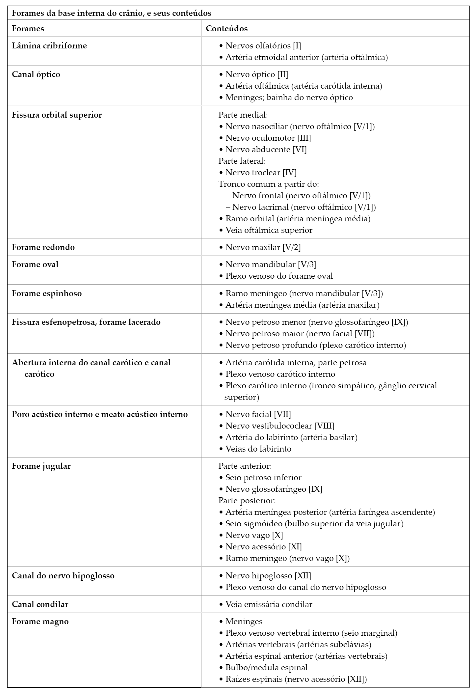
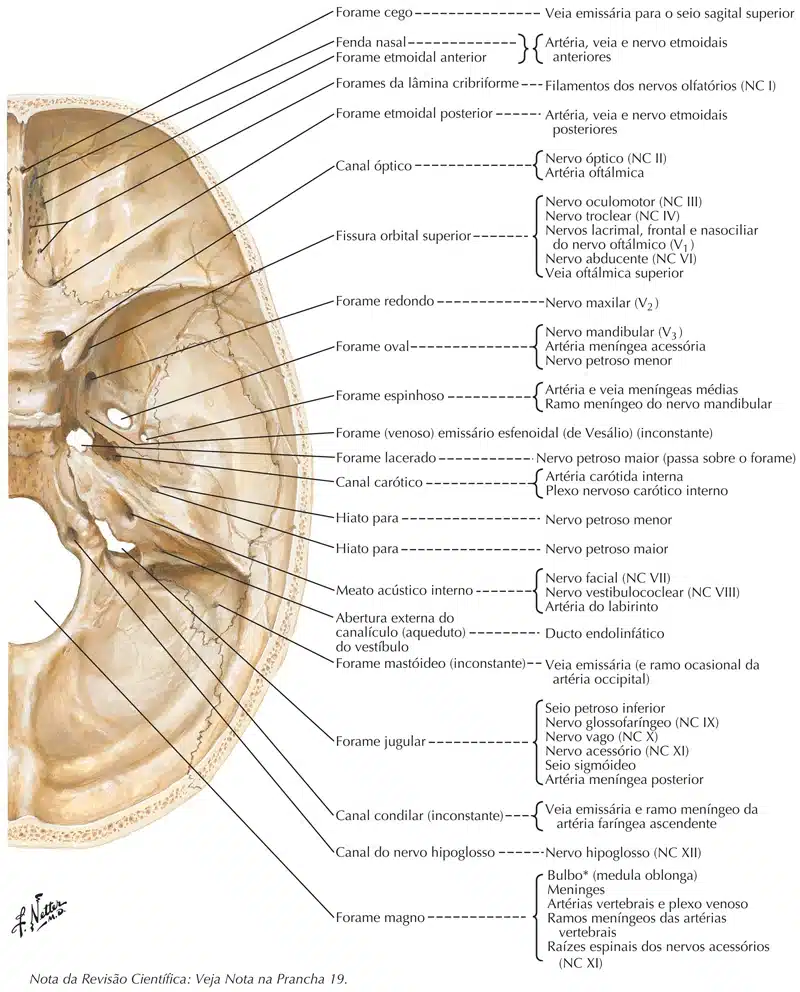
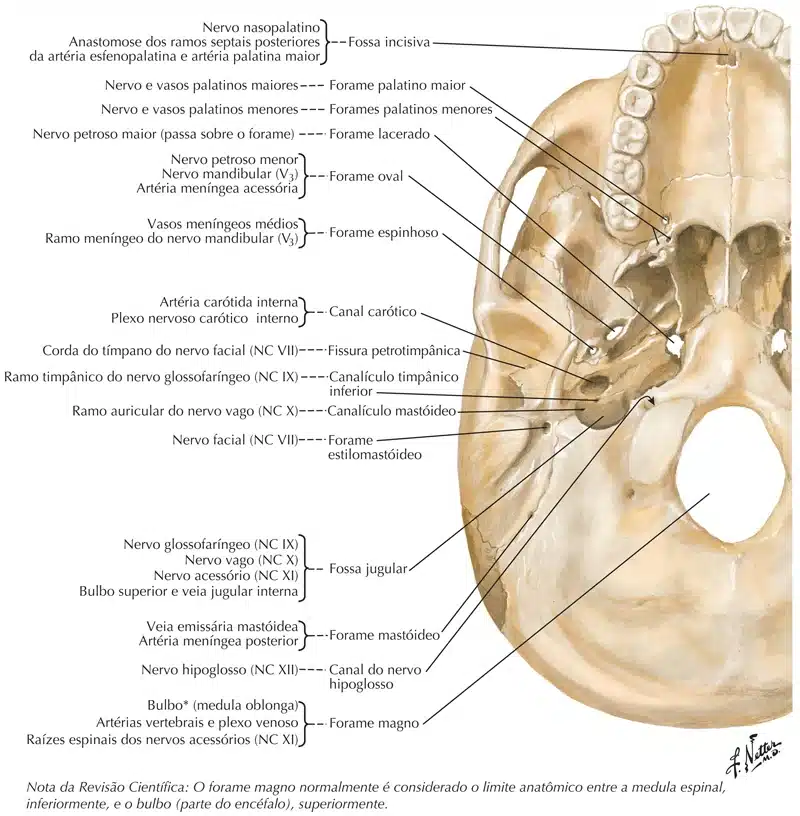
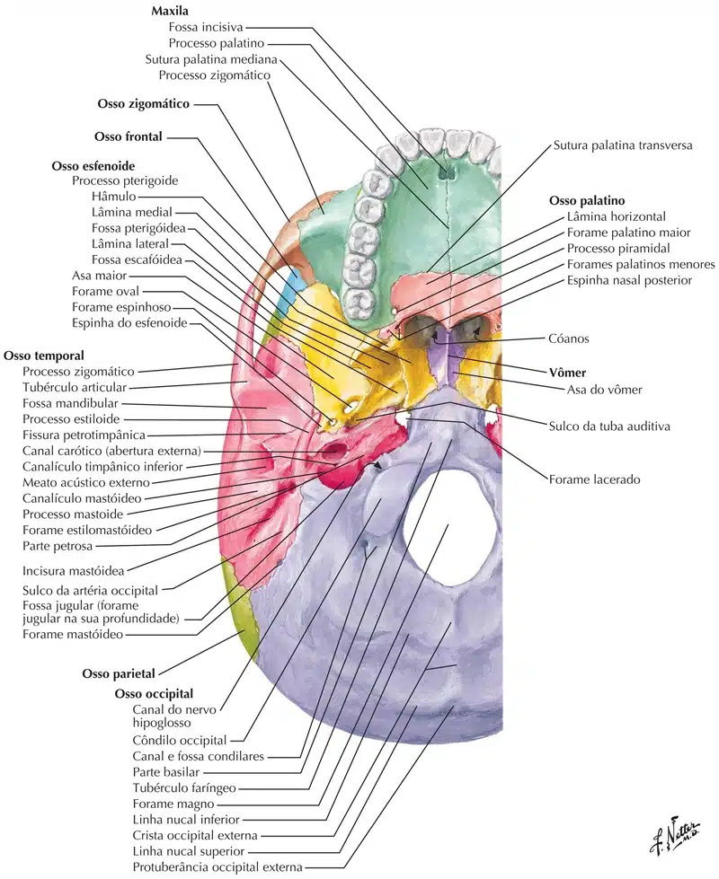

Os forames cranianos são aberturas através das quais nervos cranianos, vasos sanguíneos e outras estruturas passam, conectando diferentes regiões do sistema nervoso e circulatório.
Essas aberturas desempenham um papel crucial na regulação das funções sensoriais, motoras e autonômicas do corpo humano.
Principais Forames, canais ou fissuras
Veja nas tabelas e imagens a seguir os principais forames do crânio humano e seus componentes:

SOBOTTA: Sobotta J. Atlas de Anatomia Humana. 3 ed. traduzida. Rio de Janeiro: Guanabara Koogan, 2017.

NETTER: Frank H. Netter Atlas De Anatomia Humana. 7 ed. Rio de Janeiro: Elsevier, 2021.
NETTER: Frank H. Netter Atlas De Anatomia Humana. 7 ed. Rio de Janeiro: Elsevier, 2021.

NETTER: Frank H. Netter Atlas De Anatomia Humana. 7 ed. Rio de Janeiro: Elsevier, 2021.

NETTER: Frank H. Netter Atlas De Anatomia Humana. 7 ed. Rio de Janeiro: Elsevier, 2021.